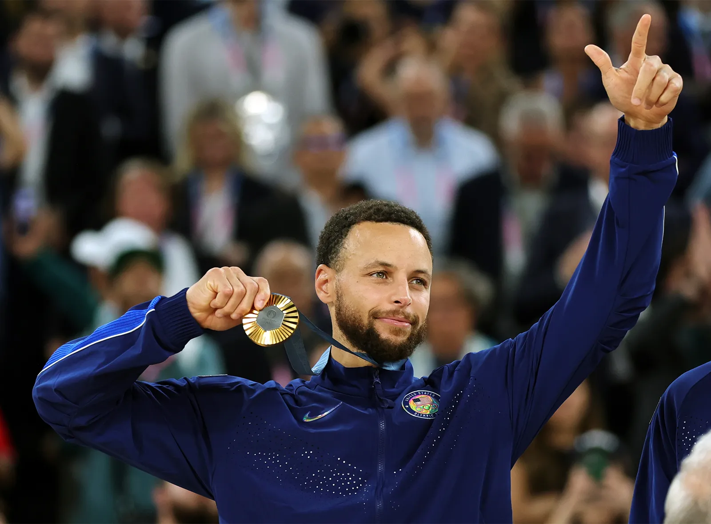
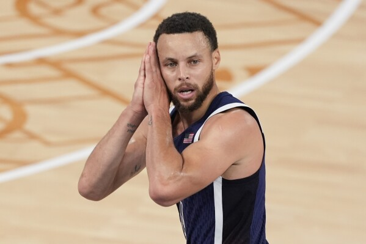

Wardell Stephen Curry II é um basquetebolista
norte-americano que atua como armador.
Atualmente joga no Golden State Warriors,
da National Basketball Association.
Muitos jogadores e analistas o consideram
como o melhor arremessador da história do esporte.

Stephen Curry é nascido em Akron, EUA, no dia 14
de março no ano de 1988.
O jogador tem 84kg e 1,88 m de altura.
atualmente,as equipes em que atua são:
Golden State Warriors e a seleçao dos Estados Unidos.